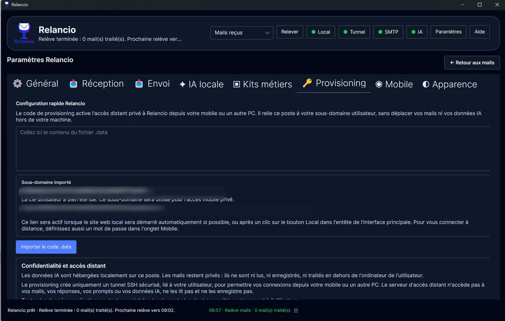

Relancio
Privacy
What stays local, what the tunnel does not store, and important limits.
Local-first principle
Relancio is designed to run on the user’s computer. Stored emails, drafts, replies, prompts, business rules, settings and AI data remain local.
Stays local
- Saved emails
- Replies and drafts
- Prompts and business rules
- Configuration
- Data related to local AI
Leaves the computer only depending on use
- Connection to configured mail servers
- Email sent through SMTP
- Private remote access if enabled
Provisioning and tunnel
The .data file associates the Relancio workstation with a private address and enables remote access when available. This access is provisioned by the author and may or may not be provided.
The tunnel is used to transport access to the Relancio workstation. It is not intended to read, modify or store your emails, replies, prompts, AI models or personal application data.
The private address becomes useful when the local site is started and the tunnel is active. For remote access, also define a password in the Mobile tab.

Incoming attachments
Received or forwarded attachments are not stored or analyzed by Relancio. Only their names may be displayed or used as contextual hints.
Web/mobile password
If web/mobile access is used, it is protected by the password defined in the Mobile tab. This password is stored locally as a hash.